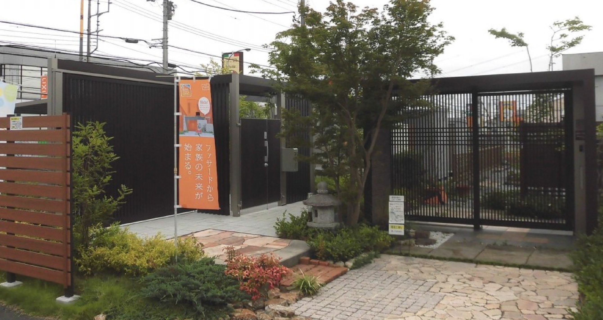
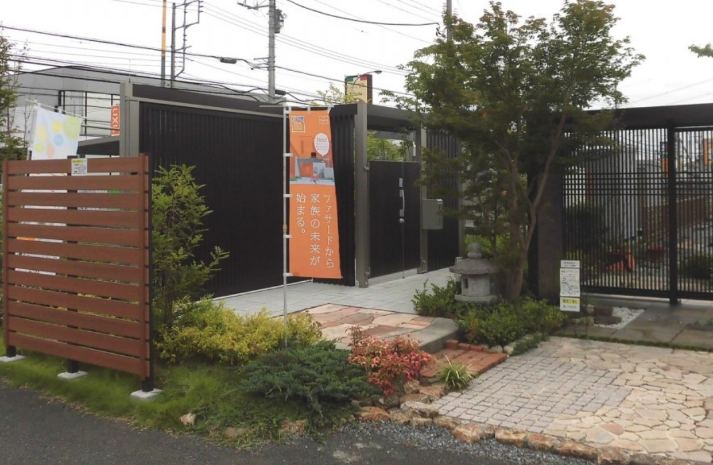
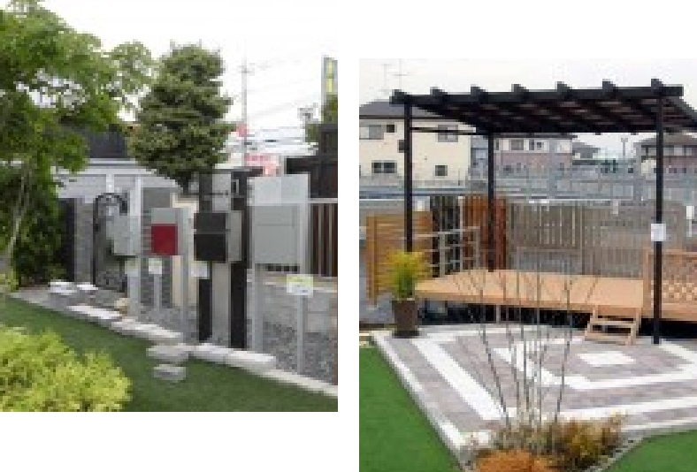
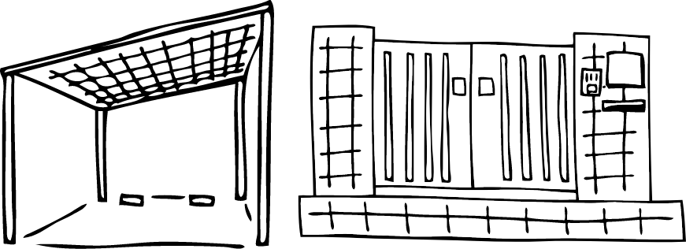
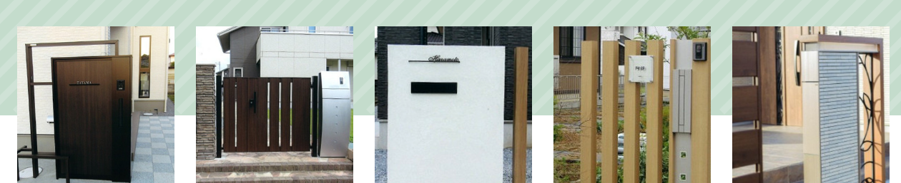

株式会社四季の杜は外構、エクステリア、リフォーム、設計･施工の専門店です
どんな小さな工事でもお気軽にご相談ください。
どんな大きな工事でも施工図面をしっかり描き、積算します。
物置・ガレージ テラス・ミニハウス 多数展示中！


四季の杜-施工例-
- ソーラーカーポート (8)
- カーポート (127)
- サイクルポート (29)
- 樹脂デッキ (44)
- サンルーム・テラス (58)
- 目隠しフェンス (106)
- お庭作り (62)
- ガレージ (64)
- 門柱 (塗り塀・レンガ・化粧ブロック 他) (60)
- アプローチ (72)
- 門廻り (25)
- 塗り塀 (14)
- 塀 (112)
- 駐車場 (80)
- バイク保管庫 (14)
- スタンプコンクリート (T様邸・完成までの工程) (5)
- ゲート (引戸・伸縮門扉 他) (31)
- スロープ (手すり 他) (11)
- 事務所・小住宅 (ミニハウス) (10)
- その他いろいろ！ (29)
- 0296-26-7101
- メールでのお問い合わせ
茨城県 筑西市玉戸西新田1087-1
営業時間 9:00~19:00
土・日・祝日も営業
定休日 木曜日
SHIKINOMORI
株式会社四季の杜は
外構、エクステリア、リフォーム、設計・施工
の専門店です
詳しく見る


infomation
インフォメーション
- 2023/12/02 四季の杜最新のチラシ情報を公開しました。
- 2023/10/07 四季の杜最新のチラシ情報を公開しました。
- 2023/06/01 ホームページをリニューアルしました。
すべてのお知らせ
work
四季の杜 -施工例-
当社施工事例です。
年間実績は200件以上！
茨城県内で数多くの施工実績を積み重ねている当社にお任せください。


カテゴリー
- ソーラーカーポート
- カーポート
- サイクルポート
- 樹脂デッキ
- サンルーム・テラス・バルコニー
- 目隠しフェンス
- お庭作り
- ガレージ
- 門柱 (塗り塀・レンガ・化粧ブロック 他)
- アプローチ
- 門廻り
- 塗り塀
- 塀
- 駐車場
- バイク保管庫
- スタンプコンクリート (T様邸・完成までの工程)
- ゲート (引戸・伸縮門扉 他)
- スロープ (手すり 他)
- 事務所・小住宅 (ミニハウス)
- その他いろいろ！